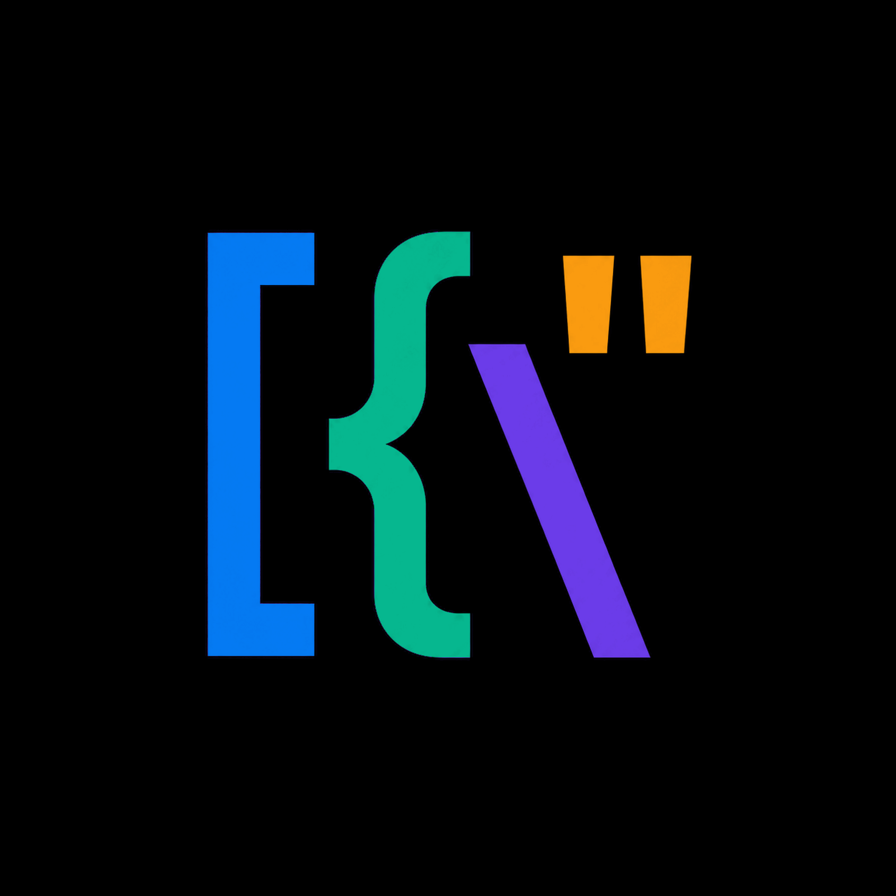

图标资源 & 主题
manifest.json 全景 · 各资源的用法与路径 · 主题切换时的图标选择策略。
1资源全景
所有图标在 assets/icons/，源头 master 在 assets/ 根。一张 manifest.json 锁定所有路径、尺寸与调色板，所有代码引用必须经过 manifest，不允许硬编码字面量。
1.1四张 source master（设计源）

1.2目录结构
assets/
├─ icon.png # 1254×1254 RGB · 源 logo（设计稿）
├─ icon-light-2048.png # 2048² RGBA · 适配亮主题（白底用）
├─ icon-dark-2048.png # 2048² RGBA · 适配暗主题（黑底用）
├─ icon-mark-transparent-2048.png # 2048² RGBA · 仅 mark（透明底）
└─ icons/
├─ manifest.json # 资源清单（权威源）
├─ light/png/ # 多尺寸亮主题 PNG（16/24/32/48/64/128/256/512/1024/2048）
├─ dark/png/ # 多尺寸暗主题 PNG（同上）
├─ macos/
│ ├─ Jsonita-Light.icns # macOS bundle icon（亮）
│ ├─ Jsonita-Dark.icns # macOS bundle icon（暗）
│ ├─ Jsonita-Light.iconset/ # 中间产物（保留以便重新 iconutil）
│ └─ Jsonita-Dark.iconset/
├─ windows/
│ ├─ jsonita-light.ico # Windows ICO（亮）
│ └─ jsonita-dark.ico
└─ menubar/ # 菜单栏 tray 用（详见 § 4）
├─ jsonita-menubar-template-18.png # 18pt @1x · template-style（macOS）
├─ jsonita-menubar-template-18@2x.png # @2x retina
├─ jsonita-menubar-template-18@3x.png # @3x
├─ jsonita-menubar-template-22.png # 22pt（更大的菜单栏配置）
├─ jsonita-menubar-template-22@2x.png
├─ jsonita-menubar-template-22@3x.png
├─ jsonita-menubar-light-{18,22}{,@2x,@3x}.png # 亮菜单栏专用（黑色 mask）
└─ jsonita-menubar-dark-{18,22}{,@2x,@3x}.png # 暗菜单栏专用（白色 mask）
2调色板（与图标同源）
下面 4 个品牌色出自 manifest.json 的 palette 字段 ── 它们既是图标里实际使用的色块，也直接映射成设计 token（详见 02 设计令牌）：
图标设计风格按 manifest 锁定为 flat source-derived export; no shadow, no gradient, no rounded corners ── 圆角由 macOS / Windows 系统在生成预览时自行处理（macOS 自动套 squircle）。
3资源类别详表
3.1Source masters（设计源）
| 文件 | 尺寸 | 背景 | 用途 |
|---|---|---|---|
icon.png | 1254² RGB | 白 | 设计稿源；不直接进 bundle |
icon-light-2048.png | 2048² RGBA | 白 | 派生 macOS Light icns / Windows light ico |
icon-dark-2048.png | 2048² RGBA | 黑 | 派生 macOS Dark icns / Windows dark ico |
icon-mark-transparent-2048.png | 2048² RGBA | 透明 | 派生菜单栏 template/light/dark；文档 favicon |
3.2派生多尺寸 PNG（icons/light|dark/png/）
派生尺寸：16 / 24 / 32 / 48 / 64 / 128 / 256 / 512 / 1024 / 2048（manifest.json pngSizes）。下面用 light 派生展示 5 档典型尺寸，所有图片按 px-perfect 渲染：
| 使用场景 | 尺寸 |
|---|---|
| 文档 / index.html favicon | 32 |
| HTML 内 logo（设置 About） | 64 / 128 |
| 分享卡片 / GitHub Social Preview | 1024 |
3.3macOS .icns（Bundle 主图标）
| 文件 | 取自 | 用途 |
|---|---|---|
Jsonita-Light.icns | icon-light-2048.png 经 iconset → iconutil | Light Bundle |
Jsonita-Dark.icns | icon-dark-2048.png 同上 | Dark Bundle（v1 不上 App Store，仅本地切换用） |
iconset 内尺寸（macOS HIG 要求齐全）：
icon_16x16.png icon_16x16@2x.png
icon_32x32.png icon_32x32@2x.png
icon_128x128.png icon_128x128@2x.png
icon_256x256.png icon_256x256@2x.png
icon_512x512.png icon_512x512@2x.png下面是 Jsonita-Light.iconset/ 的 5 个典型尺寸（@1x），按实际像素渲染，可直观对比小尺寸 → 大尺寸的清晰度：
合成命令（提交前一次性 generate）：
iconutil -c icns assets/icons/macos/Jsonita-Light.iconset \
-o assets/icons/macos/Jsonita-Light.icns
iconutil -c icns assets/icons/macos/Jsonita-Dark.iconset \
-o assets/icons/macos/Jsonita-Dark.icns3.4Windows .ico
multi-resolution ICO，内含 16 / 24 / 32 / 48 / 64 / 128 / 256 七档（manifest windows.sizes）。展示 light / dark 两套 .ico 实际渲染（浏览器自动取最大可用档）：
构成 ICO 的源 PNG 档（来自 light/png/）：
# ImageMagick / magick CLI
magick assets/icons/light/png/icon-16.png \
assets/icons/light/png/icon-24.png \
... \
assets/icons/light/png/icon-256.png \
assets/icons/windows/jsonita-light.ico3.5菜单栏 tray 图标（macOS 关键）
菜单栏对图标有严格要求：必须是 alpha mask（黑/白单色），由系统按 menu bar 背景自适应反色。三种 variant：
| variant | 颜色 | 用途 |
|---|---|---|
template | 黑色 alpha mask（macOS NSImage template） | v1 默认 ── 让 macOS 自动反色（最佳实践） |
light | 黑色 alpha mask | menubar 背景为亮色时手动用（兜底，正常不该需要） |
dark | 白色 alpha mask | menubar 背景为暗色时手动用 |
| logical size | 对应 macOS | scales |
|---|---|---|
| 18 pt | 普通 menu bar（旧 macOS / 紧凑模式） | @1 (18×18) · @2 (36×36) · @3 (54×54) |
| 22 pt | 较大 menu bar（macOS Big Sur+ 默认） | @1 (22×22) · @2 (44×44) · @3 (66×66) |
实际 18 个文件预览 ── 上排模拟亮色 menubar 背景，下排模拟暗色 menubar 背景：
22 pt × 三 variant × 三 scale（亮色背景）
22 pt × 三 variant × 三 scale（暗色背景 ── dark variant 白色 mask 显形）
18 pt（旧 macOS · 紧凑模式）
用 template variant 一招吃遍：把 jsonita-menubar-template-{18,22}{,@2x,@3x}.png 设为 NSImage template = true，macOS 会自动按 menubar 当前色（含点击高亮）反色。不要手动判断亮 / 暗。
4资源在代码中的使用映射
4.1Tauri bundler（tauri.conf.json）
{
"bundle": {
"icon": [
"../assets/icons/macos/Jsonita-Light.icns",
"../assets/icons/windows/jsonita-light.ico",
"../assets/icons/light/png/icon-32.png",
"../assets/icons/light/png/icon-128.png",
"../assets/icons/light/png/icon-128@2x.png",
"../assets/icons/light/png/icon-256.png",
"../assets/icons/light/png/icon-512.png",
"../assets/icons/light/png/icon-1024.png"
],
...
}
}Tauri 按平台从此列表挑：macOS 用 .icns；Windows 用 .ico；Linux（v1 不打）用 png。
4.2Tray icon（菜单栏）
// src-tauri/src/system/tray.rs
use tauri::{tray::TrayIconBuilder, image::Image, AppHandle};
use std::path::PathBuf;
const TRAY_TEMPLATE_18: &str = "icons/menubar/jsonita-menubar-template-18.png";
const TRAY_TEMPLATE_18_2X: &str = "icons/menubar/jsonita-menubar-template-18@2x.png";
const TRAY_TEMPLATE_18_3X: &str = "icons/menubar/jsonita-menubar-template-18@3x.png";
// 22pt 同理
pub fn build_tray(app: &AppHandle) -> tauri::Result<()> {
let icon = Image::from_path(resolve_resource(app, TRAY_TEMPLATE_18))?;
// 关键：macOS 必须 set template = true
#[cfg(target_os = "macos")]
let icon = icon.as_template(true);
let tray = TrayIconBuilder::with_id("main")
.icon(icon)
.menu(&build_menu(app)?)
.on_tray_icon_event(|tray, event| {
// 左键：toggle window；右键：show menu
...
})
.build(app)?;
Ok(())
}注意：tauri-rs Image 当前不直接支持 @2x/@3x 多尺寸自动选择。需要：
- 选项 A（v1）：固定用 22pt @2x（44×44）── 在所有 retina 屏幕上质量足够，非 retina 屏会被系统按比例缩小
- 选项 B（v1.1+）：实现 multi-scale NSImage（需要直接调 cocoa crate）
4.3Dock 图标 / About / 设置面板 logo
React 端通过 Vite 静态资源 import：
// src/settings/About.tsx
import logoLight from '/assets/icons/light/png/icon-128.png';
import logoDark from '/assets/icons/dark/png/icon-128.png';
import { useTheme } from '@/theme/ThemeProvider';
export function AboutLogo() {
const { effective } = useTheme();
return <img src={effective === 'dark' ? logoDark : logoLight}
width={64} height={64} alt="Jsonita"
className="rounded-lg shadow-md" />;
}4.4文档 / index.html favicon
三个 plan / spec / progress HTML 共用一个 favicon。assets/icons/light/png/icon-32.png + icon-32@2x.png。
<!-- 每个 .html 的 head 加 -->
<link rel="icon" type="image/png" sizes="32x32"
href="../assets/icons/light/png/icon-32.png">
<link rel="icon" type="image/png" sizes="64x64"
href="../assets/icons/light/png/icon-32@2x.png">
<!-- dark 用浏览器 prefers-color-scheme（可选） -->
<link rel="icon" media="(prefers-color-scheme: dark)"
href="../assets/icons/dark/png/icon-32.png">5主题与图标的耦合
5.1哪些图标随主题变？
同一图标 light / dark 直接对比，能瞬间看出 master 的选择策略：
| 资源 | 随主题切换 | 策略 |
|---|---|---|
| Bundle 图标（Dock / Finder） | 由 macOS / Windows 决定 | v1 只打 Light 一套（最常见），Dark 留备份；切 dark 时 Dock 仍是 Light 图标 ── macOS 也是这种行为（Safari / Finder 都不换） |
| 菜单栏 tray | 系统自适应 | template variant → macOS 自动反色，无需 React 干预 |
| About / 设置 logo | 跟 effective theme | React 切换 light/dark png（见 § 4.3） |
| HTML 文档 favicon | 不切 | 浏览器自行处理 prefers-color-scheme |
| 启动 splash | — | 不做（见 03 § 7） |
5.2JSON 类型颜色与图标同源
JSON 树 / 编辑器的类型染色直接复用 manifest 调色板，视觉上和 logo 是一套：
| JSON 类型 | light | dark | 同源 |
|---|---|---|---|
| key | #057AF3 | #5DA8FF | logo 蓝 |
| string | #15803D | #4ADE80 | logo 绿（深化） |
| number | #1D4ED8 | #93C5FD | 蓝色派生 |
| boolean | #6B3CE9 | #C084FC | logo 紫 |
| null | #9CA3AF | #6B7280 | 中性 |
6资源生成 / 校验脚本
提供一个 scripts/icons.ts 工具脚本：
// scripts/icons.ts（pnpm tsx scripts/icons.ts）
//
// 命令：
// icons check 校验 manifest.json 中所有路径文件都存在 + 尺寸匹配
// icons regen 从 master 重新生成所有派生 png + .icns + .ico
// icons clean 清除所有派生（保留 master + manifest）
import sharp from 'sharp';
import { execSync } from 'node:child_process';
import fs from 'node:fs/promises';
import path from 'node:path';
const ROOT = path.resolve(__dirname, '..');
const MANIFEST = JSON.parse(
await fs.readFile(path.join(ROOT, 'assets/icons/manifest.json'), 'utf8'),
);
async function regen() {
// 1. master → pngSizes 派生（light + dark）
for (const variant of ['light', 'dark'] as const) {
const master = path.join(ROOT, MANIFEST.masters[variant]);
for (const size of MANIFEST.pngSizes) {
const out = path.join(ROOT, `assets/icons/${variant}/png/icon-${size}.png`);
await sharp(master).resize(size, size).png().toFile(out);
}
}
// 2. 派生 → .iconset → .icns
for (const variant of ['Light', 'Dark']) {
execSync(`iconutil -c icns assets/icons/macos/Jsonita-${variant}.iconset \\
-o assets/icons/macos/Jsonita-${variant}.icns`);
}
// 3. 派生 → .ico
for (const variant of ['light', 'dark']) {
const inputs = MANIFEST.windows.sizes
.map((s: number) => `assets/icons/${variant}/png/icon-${s}.png`).join(' ');
execSync(`magick ${inputs} assets/icons/windows/jsonita-${variant}.ico`);
}
// 4. menubar 模板（透明 master → 黑 / 白 alpha mask + 多 scale）
await genMenubar();
}
async function check() {
// 遍历 manifest 所有路径，确认文件存在且尺寸正确
// 失败则 process.exit(1)
}CI 集成：
pre-commit hook跑icons check，提交前确保派生 ↔ master 一致master 改了但派生没更新→ hook 失败，提示运行pnpm icons regen
7不变量
- I-1：任何代码引用图标必须用 manifest.json 中的路径常量，不写字面量
- I-2：menubar 图标必须 set
template = true（macOS）；不手动判 light/dark - I-3：派生 PNG / icns / ico 不进 git LFS；保留 manifest + master 即可，CI 派生
- I-4：图标 master 改动须同时改 manifest.json palette 字段（如颜色微调）
- I-5：所有暴露给 UI 的颜色（logo 同源色）必须与 design tokens（02）一致
8承上启下
- 05 窗口 ── 用 bundle icon (icns) 决定 Dock 图标
- 06 菜单栏 & 快捷键 ── tray.rs 直接消费本章定义的 menubar 资源路径
- 11 打包 ── tauri.conf.json 的
bundle.icon即本章 § 4.1 定义